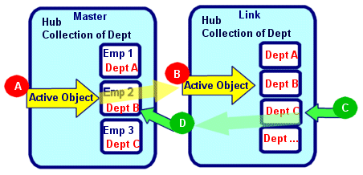

com.viaoa.hub.HubLink
com.viaoa.hub.HubLink
|
OA by ViaOA, Inc. | ||||||||
| PREV CLASS NEXT CLASS | FRAMES NO FRAMES | ||||||||
| SUMMARY: NESTED | FIELD | CONSTR | METHOD | DETAIL: FIELD | CONSTR | METHOD | ||||||||
java.lang.Object
public class HubLink
Used to connect Hubs together based on a reference property. A Hub can be linked to a reference property of the active object in another Hub.
Types of linking:
1: link the active object in a Hub to a property in another Hub, where the property type is the
same Class as the objects in this Hub.
2: link the position of the active object in a Hub to a property (numeric) in another Hub.
3: link a property in a Hub to a property in another Hub.
4: a link that will automatically create a new object in another Hub and set the link property,
whenever the active object in a Hub is changed.
Examples:
// Link department Hub to the department property in a Employee Hub
Hub hubDept = new Hub(Department.class); // create new Hub for Department objects
hubDept.select(); // select all departments from datasource
Hub hubEmp = new Hub(Employee.class);
hubEmp.select(); // select all employees from datasource
new HubLink(hubDept, hubEmp, "Department");
// Link the position of a value to a property in another Hub
Hub hub = new Hub(String.class);
hub.add("Yes");
hub.add("No");
hub.add("Maybe");
new HubLink(hub, true, hubEmployee, "retiredStatus"); // values will be set to 0,1, or 2
// Link a the property value of active object to a property in the link Hub
Hub hub = new Hub(State.class); // Class that stores information about all 50 states
hub.select(); // select all
new HubLink(hub, "stateName", hubEmp, "state"); // set the state property to name of state
// automatically create an object and set link property when active object is changed
Hub hubItem = new Hub(Item.class);
Hub hubOrder = new Hub(Order.class);
Hub hubOrderItem = new HubDetail(hubOrder, "OrderItems"); // create detail Hub for
// order items
new HubLink(hubItem, hubOrderItem, "item", true); // whenever hubItem's active object is
// changed, a new OrderItem object will
// be created with a reference to the
// selected Item object.
Example:

The Hub on the left is a collection of Employee objects. The Hub on the right has Department objects.
if the (A) active object is changed to "Emp 2", the (B) active object is changed to "Dept B",
since that is the Dept for "Emp 2".
If the (C) active object is changed to "Dept C", the (D) Dept for the active object will be set to "Dept C".
This is a common setup when using ComboBoxes. In the above example, a form that displays an Employee would have a ComboBox that is a dropdown list of Departments to choose from. When the active object in the Employee Hub is changed, the Employees Department is retrieved and used to set the active object in the Department Hub - this will then display the correct Department in the ComboBox. When the user selects a different Department using the CombBox, the active object in the Department Hub is changed, which automatically changes the Department for the Employee.
Hub hubDepartment = new Hub(Department.class);
hubDepartment.select();
Hub hubEmployee = new Hub(Employee.class);
hubEmployee.select();
HubLink hl = new HubLink(hubDepartment, hubEmployee, "Department");
Note: HubLink finalize (called during garbage collection) will remove a HubLink.
Hub.setLink(com.viaoa.hub.Hub)| Constructor Summary | |
|---|---|
HubLink(Hub fromHub,
boolean bUseHubPosition,
Hub toHub,
java.lang.String toProperty)
Link the position of the active object in a Hub to a numeric property of the active object in another Hub. |
|
HubLink(Hub fromHub,
Hub toHub)
Link the active object in a Hub to a property of the active object in another Hub. |
|
HubLink(Hub fromHub,
Hub toHub,
java.lang.String toProperty)
Link a Hub to the active object of a property of the same Class in another Hub. |
|
HubLink(Hub fromHub,
Hub toHub,
java.lang.String toProperty,
boolean bAutoCreate)
Used to automatically create a new Object in "to" Hub whenever the active object in "from" Hub is changed. |
|
HubLink(Hub fromHub,
java.lang.String fromProperty,
Hub toHub,
java.lang.String toProperty)
Link the value of a property of the active object in a Hub to a property of the active object in another Hub. |
|
| Method Summary | |
|---|---|
protected void |
finalize()
Removes HubLink from toHub. |
boolean |
getAutoCreate()
Returns true if a new object is created and added to the toHub when the active object in the fromHub is changed. |
Hub |
getFromHub()
Returns Hub that is linked to another Hub. |
java.lang.String |
getFromProperty()
Returns the property name in fromHub that is linked to the active object of a property in the toHub. |
Hub |
getToHub()
Returns Hub that is updated by toHub. |
java.lang.String |
getToProperty()
Returns property in toHub that is automatically update by linkHub. |
boolean |
getUseHubPosition()
Returns true if the position of the active object in the fromHub is used to update the property in the toHub. |
| Methods inherited from class java.lang.Object |
|---|
clone, equals, getClass, hashCode, notify, notifyAll, toString, wait, wait, wait |
| Constructor Detail |
|---|
public HubLink(Hub fromHub,
Hub toHub,
java.lang.String toProperty)
public HubLink(Hub fromHub,
boolean bUseHubPosition,
Hub toHub,
java.lang.String toProperty)
bUseHubPosition - if true, then use the position of the object in the fromHub.
public HubLink(Hub fromHub,
java.lang.String fromProperty,
Hub toHub,
java.lang.String toProperty)
fromProperty - property in fromHub to use.toProperty - property in toHub to use.
public HubLink(Hub fromHub,
Hub toHub)
public HubLink(Hub fromHub,
Hub toHub,
java.lang.String toProperty,
boolean bAutoCreate)
bAutoCreate - if true then a new object will be created and added to linkHub.toProperty - is name of property in "to" Hub that will be set.| Method Detail |
|---|
protected void finalize()
throws java.lang.Throwable
finalize in class java.lang.Objectjava.lang.Throwablepublic Hub getFromHub()
public Hub getToHub()
public java.lang.String getFromProperty()
public java.lang.String getToProperty()
public boolean getUseHubPosition()
public boolean getAutoCreate()
|
© 1999-2014 ViaOA, Inc. All rights reserved | ||||||||
| PREV CLASS NEXT CLASS | FRAMES NO FRAMES | ||||||||
| SUMMARY: NESTED | FIELD | CONSTR | METHOD | DETAIL: FIELD | CONSTR | METHOD | ||||||||